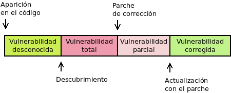

3.1. Mantenimiento de software¶
Es común (y alguno incluso afirmaría que inevitable) que el software (sistema operativos y operaciones) presente vulnerabilidades, ya sea por su diseño o su implementación. Estas vulnerabilidades, convenientemente aprovechadas por un atacante mediante un exploit, pueden derivar en un ataque.
Nota
Un error en un programa se denomina bug. Estos errores pueden derivar en problemas de funcionalidad o de seguridad. Las vulnerabilidades se refieren a errores de seguridad.
Es común hablar del ciclo de vida de una vulnerabilidad que se extiende que la vulnerabilidad aparece hasta que es completamente subsanada.
Cuando la vulnerabilidad es descubierta por algún atacante malicioso, existe un periodo de tiempo en que la exposición del software es total, puesto que no existe defensa contra los exploits que puedan diseñarse para explotar la vulnerabilidad. Durante este periodo de tiempo se habla de vulnerabilidades de día cero, ataques de día cero y exploits de día cero. El periodo, sin embargo, puede no existir si la vulnerabilidad es descubierta, pero el descubridor, en vez de aprovecharla, crea un parche para corregirla.
3.1.1. Tipos de vulnerabilidades¶
Las vulnerabilidades del software pueden clasificarse atendiendo a distintos aspectos.
Según su conocimiento
Vulnerabilidades desconocidas:
Vulnerabilidad realmente desconocida, de la que aún no tiene conocimiento ni el propio programador ni terceros.
Vulnerabilidad creada por el propio programador, generalmente una puerta trasera, con el fin de aprovecharla durante el uso del programa por un tercero. Es obvio que, en cuanto es conocida, la aplicación cae en el descrédito y dejará de ser usada.
Vulnerabilidad de día cero (0-day), que es aquella descubierta por algún tercero, pero que no ha sido comunicada a aquellos que pueden corregirla. Estas vulnerabilidades se mantienen en secreto para realizar ataques de día cero mediante algún exploit de día cero.
Frente a una vulnerabilidad desconocida no hay contramedida eficaz.
Vulnerabilidades conocidas, que son aquellas que han sido puestas en conocimiento de quien tiene capacidad de corregirlas (habitualmente el programador). Por lo general, son descubiertas por el propio programador o por algún analista de seguridad. Éstas, a su vez, pueden:
Tener ya disponible un parche (patch) que las soluciona. El parche es un pedazo de código que sustituye al pedazo de código que provoca la vulnerabilidad. Es muy común que el propio descubridor lo proporcione, sobre todo si el software es libre y el error se debía a una implementación deficiente y no a un problema de diseño. En este caso, el parche se proporcionará aparte y será necesario aplicarlo a la versión oficial del programa. Por lo general, los parches que no presentan deficiencias acaban incorporándose al programa en la siguiente versión.
Para evitar estas vulnerabilidades lo más eficaz es tener actualizado el software a la última versión estable. En sistemas muy críticos (lo cual no suele ser el caso de los sistemas de escritorios) esto quizás no baste y le sea necesario al administrador estar atento al sistema de notificación de errores que utilice su software (p.e. una lista de correo) y aplicar los parches correspondientes, mientras no haya versión correctora.
Que no exista solución aún para la vulnerabilidad y, en consecuencia, se esté expuesto a ataques que la aprovechen.
En este caso, si la vulnerabilidad es grave, no habrá otra posibilidad que deshabilitar algunas funcionalidades relacionadas con la vulnerabilidad o, directamente, dejar de usar el programa.
Common Vulnerabilities and Exposures (CVE) es una lista que registra y publica vulnerabilidades conocidas de software con un identificador único, una descripción, cuáles son las versiones del programa afectadas y cómo puede solucionarse o mitigarse.
Por otra parte, aunque no centrados únicamente en los errores de seguridad, esto es, en las vulnerabilidades, los proyectos de software (tanto aplicaciones como sistemas operativos), suelen tener algún mecanismo para el registro y el seguimiento de sus errores. Este mecanismo suele ser una aplicación llamada genéricamente bugtracker o sistema de seguimiento de errores (uno muy conocido es Bugzilla), aunque en ocasiones se utilizan mecanismos más simples como las issues que permite registrar el sitio Github para las aplicaciones alojadas en el.
Según su gravedad
Baja, que es aquella que implica un riesgo o un impacto muy bajo.
Media o moderada, que es aquella con un impacto algo mayor, pero que puede ser paliada modificando la configuración o que son difícilmente aprovechables (p.e. porque requieran acceso físico a la máquina).
Importante, que es aquella fácilmente de aprovechar,
Crítica, que es aquella que, además, puede propiciar la propagación del exploit sin ni siquiera intervención del usuario.
Nota
En realidad, esta clasificación puede hacerse de los errores en general, sean de funcionalidad o de seguridad.
3.1.2. Actualizaciones¶
Una actualización consiste en la instalación de una nueva versión de un software existente en sustitución de la versión instalada. La actualización puede, simplemente, incluir parches para corregir errores (de seguridad o de funcionalidad) o nuevo código para ampliar funcionalidades1.
Aunque no exista una regla fija, es muy común que las versiones de los programas incluyan tres niveles en su numeración, p.e. 2.3.12. El tercer número crece sólo al incluirse código que corrige errores; el segundo al incluir nuevo código que añade alguna funcionalidad (aunque por añadidura también puede corregir errores) y el primero crezca al introducir cambios más importantes aún. Las versiones en las que sólo cambia el segundo nivel se llaman versiones menores y las versiones en las que cambia el primer número, versiones mayores. Así, por ejemplo, en el ejemplo indicado la versión mayor es la 2, la 2.3 es una versión menor de la versión 2; y la versión 2.3.12 es una versión de corrección de errores (bugfix). A la actualización que incluye sólo la corrección de una o más vulnerabilidades se la denomina actualización de seguridad.
Es importante también tener en consideración que el software no es eterno y, por tanto, en algún momento se abandona su mantenimiento, bien porque se ha abandonado definitivamente su desarrollo, bien porque ha comenzado el desarrollo de una nueva versión mayor y la antigua que considera obsoleta. En este segundo caso, es común que los desarrolladores (sobre todo si se trata de un sistema operativo) sigan incorporando correcciones a sus errores durante un determinado tiempo y establezca una fecha final de ciclo de vida, después de la cual la versión no recibirá ya más actualizaciones y el usuario o tendrá que aplicar y adaptar el mismo los parches (en caso de que sea posible) o saber qué utiliza un software desahuciado.
Advertencia
La instalación o las actualizaciones de cualquier software siempre han de realizarse a través de archivos obtenidos de una fuente fiable que puede ser:
El propio creador del software (a menos que el software en sí carezca de credibilidad) que lo ofrecerá a través de su página oficial.
Los repositorios del sistema operativo, como es el caso de las distribuciones de Linux, que se encargan de empaquetar aplicaciones y ofrecerlas como parte de la distribución.
Obtener el software de forma ilegal o a través de terceros suele provocar la inclusión de troyanos que pueden comprometer la seguridad o el rendimiento del sistema.
En un sistema de escritorio lo más realista es esperar que el usuario no se preocupe por buscar periódicamente las actualizaciones, sino facilitárselas de manera más o menos automática.
3.1.2.1. Sistemas Windows¶
La última política de Microsoft al respecto de su Windows 10 es ofrecer grandes actualizaciones (que incluyen modificaciones en la funcionalidad o el comportamiento) cada seis meses, una en el primer semestre (marzo o abril generalmente) y otra en el segundo semestre (septiembre u octubre, generalmente). Entre tanto, pueden recibirse actualizaciones de seguridad que se prolongarán durante 18 meses. Aunque en un primer momento las actualizaciones periódicas eran obligatorias, a partir de 2019 Microsoft las ha convertido en voluntarias.
La aplicación (o no) de estas actualizaciones semestrales, determina la versión de Windows 10 (consultable a través del comando winver). Por ejemplo, la versión 2004 es un Windows 10 que ha recibido la actualización de abril (04)de 2020. Como el mes puede variar es común referirse genéricamente a las actrualizaciones (sobre todo cuando se habla de alguna que aún no se ha lanzado y por tanto se desconoce el mes exacto) como 21H1 (la primera actualización de 2021), 21H2 (la segunda de 2021), etc.
El sistema de actualizaciones, pues, puede asimilarse a un sistema de versiones estables de 6 meses, cada una de las cuales tiene un ciclo de vida de 18 meses 2.
Estas actualizaciones, sin embargo, sólo se refieren al sistema operativo, y no a las aplicaciones individuales ajenas a Microsoft; por lo que de instalar de forma individual una aplicación debemos procurar obtenerla de una fuente segura. En muchos casos, las propias aplicaciones comprueban al ejecutarse si existen versiones más modernas y sugieren su instalación en caso de que así sea. Estas instalaciones, pues, son ajenas a la actualización del sistema operativo.
3.1.2.2. Sistemas Linux¶
Los sistemas Linux contrariamente se instalan a través de distribuciones que incluyen no sólo el sistema operativo, sino también la mayor parte de las aplicaciones que serán necesarias. De hecho, lo habitual es que el usuario no necesite otras aplicaciones fuera de las ofrecidas por la distribución. Por este motivo, las actualizaciones del sistema incluirán también la actualización de las aplicaciones.
Ver también
Para saber cómo actualizar el sistema consulte el epígrafe sobre gestión de software.
En cuanto a los ciclos de vida de las distribuciones hay dos grandes filosofías:
Las distribuciones rolling, que son distribuciones que no tienen versiones definidas, sino que van recibiendo constantemente actualizaciones, tanto de seguridad como de funcionalidad. Tal es el caso de algunas famosas como ArchLinux o Gentoo.
Las distribuciones con versión estable, que son aquellas en que cada cierto tiempo se libera una nueva versión. Cuál sea este tiempo depende de cada distribución:
Fedora (la versión comunitaria de RedHat) libera versiones cada 6 meses y cada una de ellas tiene sólo siete meses de mantenimiento (hay pues un mes de solapamiento entre la versión antigua y la nueva).
Centos (una versión clónica de la distribución comercial de RedHat) libera versiones al tiempo que lo hace RedHat (el periodo no es fijo) y proporciona soporte durante diez años.
Debian libera versiones aproximadamente cada dos años, que gozan de mantenimiento durante cinco años3.
Ubuntu libera versiones cada seis meses (en abril y en octubre) que tienen 9 meses de soporte. Sin embargo, cada dos años (es decir, una de cada cuatro versiones) tiene soporte extendido y su soporte dura 5 años. Estas versiones de soporte extendido son las liberadas en el mes de abril de los años pares. La última, por tanto, a fecha de esta redacción, es la 20.4 (abril de 2020).
Notas al pie
- 1
En puridad, un parche también puede añadir funcionalidades, pero es común utilizar el término para referir correcciones y no añadidos.
- 2
Hay, sin embargo, ramas LTSB y LTSC con tiempos entre versiones y tiempos de soporte distintos. Consulte este artículo de Genbeta.
- 3
El esquema de versiones de Debian es bastante más complejo y, de hecho, las ramas de pruebas e inestables son versiones rolling. Consulte cuál es exactamente.